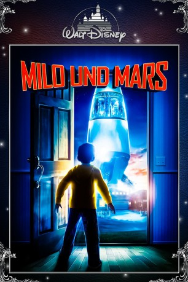

#5706 Milo und Mars
Alternativ: Mars Needs Moms
 
 IMDB-Wertung: 5.4 / 10
IMDB-Wertung: 5.4 / 10  Metascore: 0
Metascore: 0 
Lange hat sich der kleine Milo gewünscht, seine nervtötende Mutter solle bitte von Außerirdischen entführt werden, damit er endlich seine Ruhe hat. Als eine Horde grimmiger Marsianer seinem stillen Wunsch Folge leisten, findet er das allerdings dann doch nicht mehr so toll – und setzt alle Hebel in Bewegung, um die arme Frau aus der Gewalt ihrer Kidnapper zu befreien...
Jahr: 2011
Dauer: 88 Minuten
FSK: 6
Land: USA Studio: Walt Disney Studios Motion PicturesTonspuren: DD5.1 - ,
Untertitel: Deutsch, Englisch,
Auflösung: 1080p (1920x800) Größe: 6553 MB
Genre: Sci-Fi, Abenteuer, Animation/Trick, Familie
Regisseur: Simon Wells
Drehbuch: Auguste Le Breton
Soundtrack:
Darsteller:
Datei: X:\Kinder Disney HD\2000-2018\Milo und Mars (2011, FSK6, 1920x800).mkv seit 13.03.2017
Festplatte: Kinder-Filme+Trick
 Es gibt insgesamt 45 Filme in der Gruppe 'Kinder Disney HD\2000-2018'
Es gibt insgesamt 45 Filme in der Gruppe 'Kinder Disney HD\2000-2018'